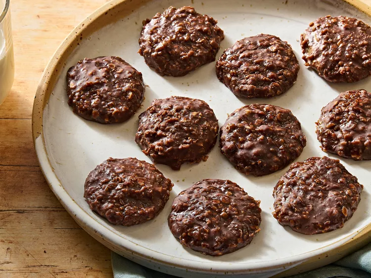

Go Home
No Bake Cookies

Description
Incredibly good. Quick and demolishable. Mist on rose petal
Ingredients
- 2 Cups of Sugar
- 1/2 Cup of Butter
- 1/2 Cup of Milk
- 3 Tablespoons of Cocoa Powder
- A Pinch of Salt
- 3 Cups of Oats
- 1/2 Cup of Peanut Butter
- 1 tsp Vanilla Extract
Steps
- Bring sugar, butter, milk, cocoa, and salt to a full rolling boil in a saucepan for 2 minutes.
- Add quick-cooking oats, peanut butter, and vanilla; mix well.
- Working quickly, drop by teaspoonfuls onto waxed paper and let cool.
- Enjoy!